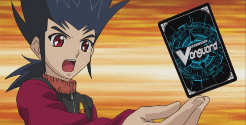
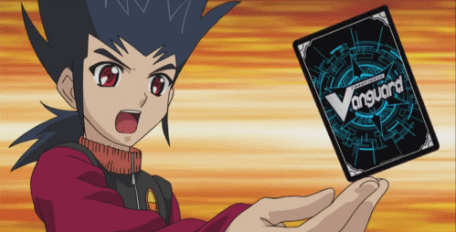
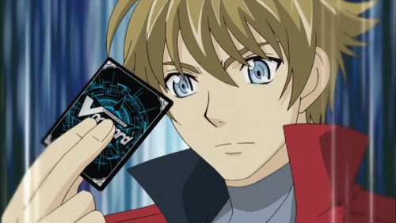
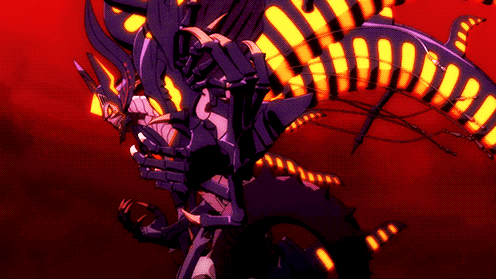

Star Gate
 

Nova Grappler "Play Style"
They focus on standing their units, with some cards devoted to Counter Charging. Their emphasis on standing is further enhanced with the clan-exclusive keyword "Rush".
How to Play
The "Extreme Battler/Victor" archetype is based on abusing the keyword "Rush" to gain immense power and restanding abilities with the greatest of ease and can stack "Rush" on the amount of times your rear guards stand up within a turn. They are known for having one of the best late game tactics in the all of Cardfight Vanguard for have having multiple attacks which are heavy blows each time. So its important to keep applying a "reasonable" amount of aggression so the deck does not burn out.
The "Beast Deity" archetype is based on early game agression to kill the opponent before they stride for the first time. They also have the ability to stand up units if they Drive Check Grade 1 or higher "Beast Deity" units. With that being said, you can fully utilize critical triggers in your deck for maximum results.
The "Asura Kaiser" archetype is based on keeping as much Grade 3s in the deck to Drive Check them to gain disasterous abilities to end games such as to restand the vanguard and all your rearguards. The best way to use them is pretty much go all out and to keep most of your Grade 3s in the deck for you to Drive Check them during battle. But still preserve hand advantage so you dont burn out too quick.

Dimension Police "Play Style"
The Justice of Dimension Police are focused around powering up their vanguard , their keyword "Burst" is triggered upon having a certain amount of power before the attack step; usually, these skills involve an increase in criticals. The villains of Dimension Police reduce the power of your opponent's vanguard, making it easier for their units to deal damage and gaining benefits if the vanguard has 8000 or less power. Dimension Police features effects that retire the opponent's guardians to make it even harded to block their high powered Vanguard attacks.
How to Play
The "Dimensional Robo" archetype is based on the vanguard gaining a certain amount of power which usually trigger an ability which gives units extra criticals and the ability to Guard Break.
The "Grandgallop/Cosmic Hero" archetype is based on achieving "Burst" for units to give more power and abilities amongst the field such as extra criticals and Drive Checks.
The "Zeal/Reverse Daiyusha" build is based on minusing your opponent's vanguard power down to either 8000 to 0 so they would have to guard more out of hand to not take damage. They can also influence their vanguard's power during their turn as well.

Link Joker "Play Style"
A central theme around all of the Link Joker's playstyles revolves around various concepts of "Locking" which is to make a unit on the field unusable by any means. The Star-vaders focus their efforts on Locking the opponents rear-guards, preventing their attacks and limiting their offensive options.
How to Play
The "Messiah" archetype revolves around locking and unlocking your own rear-guards to gain benefits offensively and defensively. This build is the jack-of-all-trades of offense and defense.
The "Star-Vader" archetype revolves around locking your opponent's units in order to gain additional skills and has the capability of preventing unlocks at the opponent's end phase, thus worsening the opponent's situation. This is the more aggressive side of Link Joker besides the archetype "Deletor"
The "Deletor" archetype is based on erasing your opponent's vanguard power, effect, and name. this is meant to activate extra effects when the vanguard is deleted and to heavult agress the opponent with multiple attack while crippled.